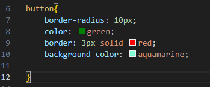
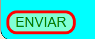
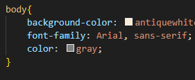

O que é uma regra CSS?
Uma regra CSS é um conjunto de instruções usado para definir o estilo (aparência visual) de elementos HTML em uma página.
Ela fala para o navegador quais elementos devem seram alterados (seletor) e como eles devem ser exibidos (são as propriedades e valores)
Cada regra do CSS será formado por um seletor e um bloco de declarações.
Exemplo da estrutura:

-
Seletor: vai referenciar qual elemento do HTML será estilizado.
-
Propriedade: Vai definir qual aspecto visual será alterado(como tamanho, cor, fonte, posição, etc).
-
Valor: É as especificação de como essa propriedade será aplicada.
Exemplo Prático:

-
button (Seletor): está referenciando o seletor button que será estilizado.
-
(Propriedades) que defini os aspectos visuais que seram alterados:
- border-radius:
- color:
- border:
- background-color
-
(Valores): as especificações para suas propriedades correspondentes
- 10px;
- green;
- 3px solid red;
- aquamarine;
Resultado:
- Mudança na borda do botão
- Mudança na cor do nome
- Mundança na cor da borda
- Mundança da cor de fundo

Exemplo Prático 2:

-
body (Seletor): está referenciando o seletor button que será estilizado.
-
(Propriedades) que defini os aspectos visuais que seram alterados:
- background-color
- font-family:
- color:
-
(Valores): as especificações para suas propriedades correspondentes
- antiquewhite;
- Arial, sans-serif;
- gray
Resultado:
- Mudança na cor de fundo do site
- Alteração na fonte do texto
- Mundaça na cor do texto para cinza